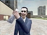
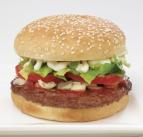

User:Damian
From SA-MP Wiki
This user is afraid of Mr. Bean. And has no Nintendo Wii. 
This user is a farmer. You can help SA-MP by introducing him to technology.
This member is the most important one in the Betateam. He provides strong and moral support to the dev and is loved by everyone.
Heroic things Ive done
-Grew 1500 acres of pure corn with littlewhitey
-Saved Aru's life
-Saved Azer's Life
-Saved f3llah1n's Life
-Saved littlewhitey's Life
-Saved Simon's Life
-Left Static to die
Helped these two to come together and become a happy family
Me and my homie
This user is Fat. You can help SA-MP by signing them up for a weightloss program. 
This user could be but probably is lonely. You can help them by signing them up to a dating program or getting them into a clan.
This user is a member of the closed and private SA:MP beta team. This user is responsible for testing SA:MP before a new version is released to the public.

{kind=link}
{kind=link}
{kind=link}
{kind=link}
{kind=link}
{kind=link}
{kind=link}
{kind=link}
{kind=link}
{kind=link}